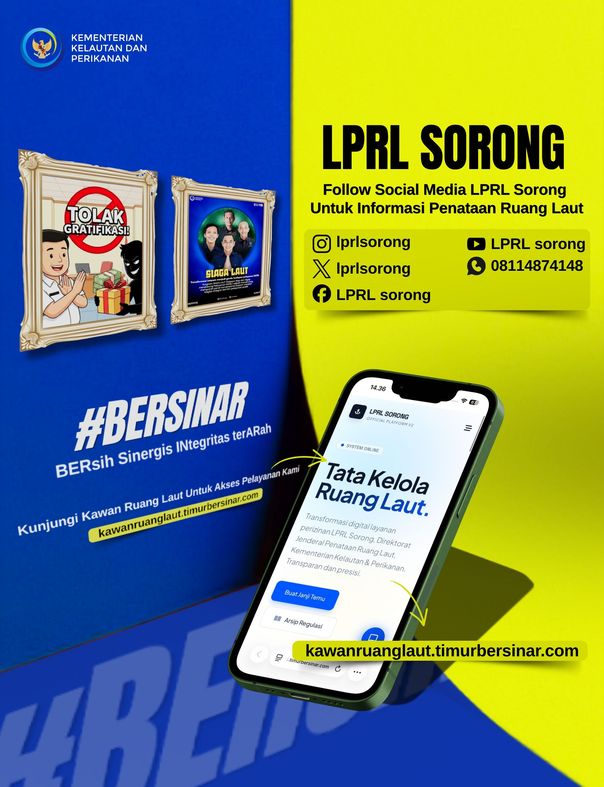

Konsultasi layanan KKPRL
Reservasi konsultasi layanan KKPRL dengan petugas. Layanan resmi LPRL Sorong untuk kebutuhan penataan ruang laut.
Reservasi sekarangTransformasi digital layanan perizinan LPRL Sorong, Direktorat Jenderal Penataan Ruang Laut, Kementerian Kelautan & Perikanan. Transparan dan presisi.
Portal publik siap membantu kebutuhan informasi Anda.

Solusi lengkap untuk kebutuhan perizinan pemanfaatan ruang laut Anda.
Reservasi konsultasi layanan KKPRL dengan petugas. Layanan resmi LPRL Sorong untuk kebutuhan penataan ruang laut.
Reservasi sekarangAkses materi PDF dan video mengenai KKPRL serta dokumen publik yang mendukung kebutuhan informasi Anda.
Lihat referensiInformasi kinerja layanan dan hasil survei kepuasan masyarakat LPRL Sorong dapat diakses secara terbuka.
Buka informasiInformasi layanan pada sistem utama tetap bersumber dari data dinamis. Bagian ini adalah tampilan statis untuk evaluasi UI/UX.
Grafik publik untuk melihat distribusi pemohon berdasarkan sifat kegiatan. Tampilan visual ini memberi ruang yang cukup untuk data dinamis dari sistem.
Daftar dokumen akan mengikuti regulasi yang dipublikasikan pada sistem utama.
Akses kanal informasi layanan publik, pengaduan masyarakat, dan website organisasi terkait untuk mendapatkan informasi tambahan yang terpercaya.
Referensi pembelajaran publik tentang KKPRL dalam bentuk PDF dan video eksternal yang dikelompokkan per topik.
listdatakkprl.test/belajar-kkprl ▥Publikasi hasil survei kepuasan masyarakat LPRL Sorong per triwulan dan tahun.
listdatakkprl.test/hasil-survei-kepuasan ↗Informasi kinerja layanan per triwulan dengan rekap petugas yang ditampilkan sebagai inisial.
listdatakkprl.test/hasil-kinerja-layanan ↗Kanal saran dan umpan balik publik yang dapat dikirim secara anonim, dengan pilihan petugas satu, banyak, atau umum.
listdatakkprl.test/masukan-publik ≈Sistem elektronik KKP untuk pengajuan KKPRL bagi kegiatan non-berusaha melalui portal berbasis web.
e-sea.kkp.go.id !Kanal pengaduan masyarakat resmi pemerintah Indonesia untuk aspirasi dan pelaporan publik.
lapor.go.idSilakan lengkapi formulir berikut untuk mendapatkan tiket antrian.
Tentukan kebutuhan konsultasi yang paling sesuai.
Gunakan informasi yang aktif agar petugas dapat menghubungi Anda.
Simpan tiket antrian dan gunakan untuk memeriksa status layanan.
Reservasi konsultasi layanan KKPRL dengan petugas.